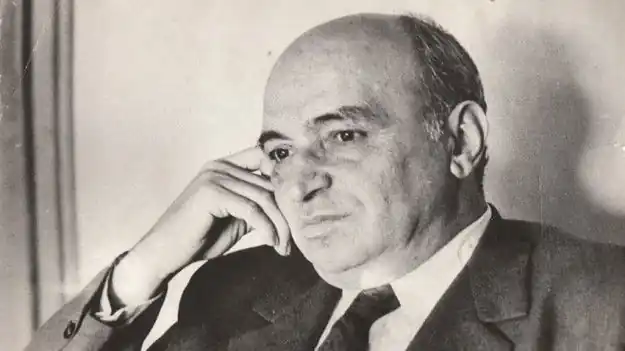

Вежинов Павел (справжнє ім'я: Никола Делчев Гугов — 9.11.1914, Софія — 19.11.1983, Софія) — болгарський письменник.
Закінчив філософський факультет Софійського університету. Літературну діяльність розпочав ще в довоєнні роки. Перша книга — збірка оповідань "Вулиця без бруківки" ("Улица без паваж", 1938), герої якої — "маленькі люди" софійського передмістя. Уже тут відчувається його талант оповідача, вміння проникати за межі звичного і банального. Дві наступні книги: збірка "Дні то вечори" ("Дни и вечери", 1942), роман "Синій захід"("Синият залез", 1942-1943; опубл. в 1947 р.).
Наприкінці 1944 р. Вежинов пішов в армію, був фронтовим кореспондентом, редактором армійської газети. На воєнному матеріалі написана повість "Друга рота" (1949). Людям активної життєвої позиції присвячені багато його книг наступних років: повісті "В долині" (1950), "Наша сила" (1957), "Далеко від берегів"(1958), роман "Сухарівнина"("Сукаларавнина", 1952). Від початку 60-х років Вежинов, який приніс із собою в болгарську літературу міську тематику, приваблює життя молодого покоління, сучасна проблематика (збірки оповідань "Хлопчик зі скрипкою" — "Момче с цигулка", 1963; "Запах мигдалю" — "Миризмата на бадьми", 1966). Великий успіх приніс Вежинову роман "Зірки над нами"("Звездите над нас", 1966). Відтворюючи сторінку антифашистської боротьби в Болгарії в роки Другої світової війни, автор розповідає про драматичну історію втечі з царської тюрми групи в'язнів. Проте головним тут є не сюжет, а порушення морально-філософських проблем, що дозволяє висунути в центр зображення цікавий, багатогранний характер діда Штиляна з його болісними роздумами "про безодню світів всередині нас". Роман "Вночі на білих конях" ("Нощем с белите коне", 1975) ознаменував початок "пізнього" Вежинова, одноголосно поцінований критикою як видатний твір болгарської прози 70-х pp. Критик Б. Ничев пише: "Це книга про людську взаємність і самотність в умовах нашого життя, про зв'язок між поколіннями — співробітництво і боротьбу поміж ними; про силу розуму і його обмеженість; про невтоленне і вічне прагнення людини до краси та досконалості і про несправедливу та прикру тлінність, якою обмежений кожен людський порух. Це книга про смерть, осмислювану як одну з найважливіших проблем життя". У центрі роману — образ академіка Урумова, біолога, вченого зі світовим ім'ям, який працює над структурою антитіл і намагається визначити природу раку. Автор знайомить нас з ним в останній рік його життя, коли, підсумовуючи прожиті літа, він приходить до думки про красу і силу буття, переживаючи своєрідний ренесанс. Заголовний образ у своєму русі романним простором повертається різними, інколи протилежними гранями, насичується роздумами письменника про життя і смерть, щастя, смисл буття. Мотиву, пов'язаному зі спогадами про коней, письменник надасть легендарного міфологічного забарвлення, з'явиться тема польоту, свободи. Водночас уведення образу замученого, самотнього коня (своєрідна цитата зі "Злочину і кари" Ф. Достоєвського) підкреслить драматичне життя героя, його неповноту. Услід за цим романом вийшли друком одна за другою декілька повістей, близьких до нього за проблематикою, манерою письма. У них письменник розмірковує про своєрідне емоційне зубожіння людини в епоху науково-технічне: революції. Елементи умовності та фантастики уможливлюють постановку гострих моральних проблем. У "Білому ящурі" ("Белият гущер". 1977) — історія вундеркінда, мутанта з гіпертрофованим апаратом розуму і абсолютною відсутністю емоційного, духовного досвіду. Вимовившись від совісті та моралі, він стає небезпечним для навколишніх. У повісті "Озерний хлопчик" ("Езерно момче", 1978) — доля Валентина Радева, трагічно обдарованої дитини, наділеної уявою, яка схожа на долю хлопчика з "Білого пароплава" Ч. Айтматова. Вік самотній поміж практичних, грубо розважливих людей. У центрі найзначніших творів Вежинова 70-х — поч. 80-хpp. (повісті "Бар'єр" — "Бариерата", 1976; "Виміри", 1979; роман Терези" — "Везни", 1982 — своєрідної трилогії, за зізнанням самого письменника) — інтелігент, людина творчої праці (великий учений, композитор, архітектор), якого драматичні повороти його долі, а часто і якісь трагічні обставини змушують озирнутися на власне життя, зайнятися "підбиванням підсумків", заново відкрити для себе смисл життя. У "Бар'єрі" Вежинов ставить питання ціни людського життя, смаку щастя, морального смислу людського досвіду. Жанрова структура повісті "Виміри" визначається самим оповідачем, коли він говорить про те, що йому "прийшла в голову ця щаслива (чи не щаслива) думка — написати спогади. У легкоплинну течію життя оповідача, коли ніщо не приносить радості, в тому числі і наука (він — член-кореспондент Академії наук, біохімік), у стосунках з близькими — відчуження, "жорстока холоднеча", відсутність тепла і радості, входить несподіване. Він, як колись його баба Петра, з жахом відчуває наближення землетрусу. Він — учений, котрий звик "до точності логічного мислення, до гранично зрозумілих категорій і понять!". Фантастичний елемент, як правило, присутній у більшості пізніх творів письменника, він органічно живе у творчості реаліста, слугуючи засобом постановки і дослідження моральних проблем, емоційної природи людини. Мотив передчуття землетрусу, майбутньої катастрофи набуває символічного значення. Герой розуміє, що не менш важливою, аніж землетрус, стає для нього інша проблема: його власна поведінка, структура його особистості, яка не задовольняє, лякає, загрожує небезпекою йому і навколишнім. Стан душі, який він у собі виявляє, здається йому не меншою катастрофою. Виявляється, людина може успадкувати (автор не приховує тут своєї усмішки) навіть таку унікальну здатність, як передчуття землетрусу. Але не успадковується, не передається, а щоразу добувається самою людиною з надр душі здатність любити, співпереживати, цікавість до життя, людей. Герой потрапляє під автобус, перебуває в коматозному стані, насильно руйнується його психологічна структура, що формувалася роками. Ціною життя він пориває з егоцентризмом, "збирає" себе заново. Лише тепер оповідач може вважати, що він "виловив частинку бабусиної істини". Так для нього відновлюється зв'язок часів, моральний досвід попередніх поколінь стає і його надбанням, спадкоємець виявляється гідним "спадку". Герой роману "Терези" — відомий архітектор. Він упав з новобудови, втратив пам'ять, і тепер змушений по частинах відновлювати історію свого життя, збирати себе заново. Процес повернення моральної пам'яті виявляється єдино необхідним, щоб подолати власну байдужість і душевну глухоту.